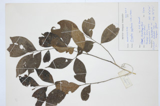

Images :


| Habit : | Shrubs or Small trees , up to 5 m tall. |
| Leaves : | Leaves simple , alternate , distichous ; petiole 0.1 cm long, pubescent ; lamina 5-8.5 x 2.2-3.5 cm, elliptic or ovate , apex shortly bluntly acuminate , base acute , chartaceous , glabrous , midrib impressed above; secondary_nerves 4-7 pairs, slender; tertiary_nerves reticulate , not prominent. |
| Inflorescence / Flower : | Flowers solitary or 2-3 together, axillary or extra-axillary ; pedicels 1-2 cm, pubescent . |
| Fruit and Seed : | Clustered 1-2 seeded berries , globose . |